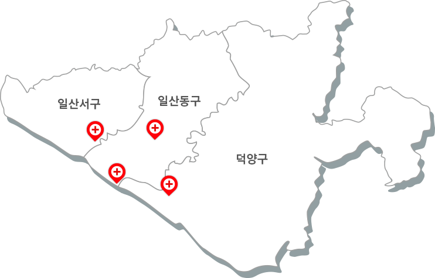

| 소방서 | 실증 운영 구급차 |
|---|---|
| 서대문소방서 | 6대 |
| 마포소방서 | 7대 |
| 은평소방서 | 7대 |
| 합계 | 20대 |
| 지역 | 의료기관 |
|---|---|
| 서대문구 | 신촌 세브란스병원, 의료법인 동신의료재단 동신병원 |
| 은평구 | 청구성심병원, 가톨릭대학교 은평성모병원 |
| 종로구 | 세란병원 |
| 합계 | 5대 |

인공지능 응급의료시스템은 현재까지 ‘서울 서북3구(서대문구, 마포구, 은평구)’
내의 3개 소방서(서대문소방서, 마포소방서, 은평소방서)와
5개의 의료기관(신촌 세브란스병원, 동신병원, 청구성심병원, 은평성모병원, 세란병원)에서
선도지역 실증을 통해 효과를 입증하였습니다.
서울시 서북3구
| 소방서 | 실증 운영 구급차 |
|---|---|
| 서대문소방서 | 6대 |
| 마포소방서 | 7대 |
| 은평소방서 | 7대 |
| 합계 | 20대 |
| 지역 | 의료기관 |
|---|---|
| 서대문구 | 신촌 세브란스병원, 의료법인 동신의료재단 동신병원 |
| 은평구 | 청구성심병원, 가톨릭대학교 은평성모병원 |
| 종로구 | 세란병원 |
| 합계 | 5대 |
인공지능 응급의료시스템은 현재까지 ‘경기 고양시(일산서구, 일산동구, 덕양구)’
내의 2개 소방서(고양소방서, 일산소방서)와 4개의 의료기관(일산병원, 동국대 일산 불교병원,
일산백병원, 명지병원)에서 선도지역 실증을 통해 효과를 입증하였습니다.
경기도 고양시
| 소방서 | 실증 운영 구급차 |
|---|---|
| 고양소방서 | 6대 |
| 일산소방서 | 7대 |
| 합계 | 16대 |
| 지역 | 의료기관 |
|---|---|
| 일산동구 | 국민건강보험 일산병원, 동국대학교 일산 불교병원 |
| 일산서구 | 인제대학교 일산백병원 |
| 덕양구 | 의료법인 명지의료재단 명지병원 |
| 합계 | 4대 |
응급의료시스템 사용 효과 분석
응급상황 발생부터 병원 이송 시까지 걸리는 총 14분 38초(서북3구 이송 시간 평균) 중
이송 환자에 대한 정보를 ‘사전 인지’하는 7분 28초(전체 이송 시간의 51%)를 확보하여
응급환자에 대한 ‘신속한 처치 준비’가 가능합니다.

이송 환자에 대한 정보를 “사전 인지”하는 7분 28초 확보 (전체 이송 시간의 51%)
응급환자에 대한 “신속한 처치 준비” 가능
인공지능 응급의료시스템을 적용하여 구급 단계에서 전송한 환자 정보를 병원 단계에서
미리 파악하고 대처하여 적절한 처치를 이뤄낸 사례입니다.
구급단계
66세 남자 환자 입니다.
흉통, 호흡곤란 증상 있습니다.
다른 병원에서 찍은 12유도 심전도 결과.
ST elevation 소견이 보입니다.
심정지 환자입니다 CPR 시행합니다.
요양보호사와 계단 오르다 쓰러졌습니다.
90대 남성입니다.
병원 단계
ER KIOSK를 통해,
신속한 접수 및 처치 준비 20여분 안에 심장내과 진료 시작
상황실을 통해 연락 받지 못한 상황, ER KIOSK를 통해,
신속한 접수 및 처치 준비 20여분 안에 심장내과 진료 시작
의료기관 종사자들의 피드백
구급대원ㆍ병원 간의 인계 시간 단축
알러지 환자 등 사전에 필요한 정보들을 미리 확인할 수 있어서 인계 시간이 단축되었음
구급대원 발화를 통한 정보 획득
ER KIOSK 상세보기에서 구급대원 발화 정보를 통해 사전에 획득하는 정보가 많아졌음
전원 시 응급의료기관 과밀화 정보
ER KIOSK에서 응급의료기관 과밀화 정보를 확인하여 전원 이송 시 도움이 되었음
타 병원 정보 공유
우리 병원으로 도착했으나 수용이 불가한 경우, 구급 대원에게 KIOSK의 주변 응급의료기관 정보를 통하여 다른 병원의 정보를 제공해 줄 수 있어 업무에 도움이 되었음
구급대원(소방)의 피드백
구급대원
만족도 조사
- 구급대원 만족도 조사 결과 -
현장 구급대원 교육 및
의견 수렴
- 응급의료시스템 UI -
병원·소방 간
소통의 장 마련
- 구급대원 교육 및 의견수렴 내용 -